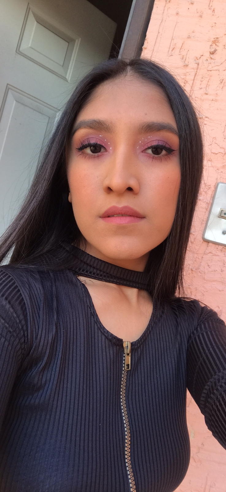

Página de mascotas
Esta es una página de perritos
Hecha por Fernanda Salazar
:quality(70)/cloudfront-us-east-1.images.arcpublishing.com/culturacolectiva/RCBS6U7PUJH2VELGTVCFJBOSHM.png)

Lista de perritos
Tres cosas que los perros aman
- Comer
- Dormir
- Jugar
Tres cosas que los perros odian
- Bañarse
- Inyecciones
- Medicina
Si quieres ver más fotos de pugs da click aqui